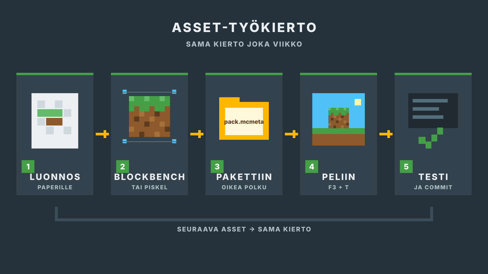
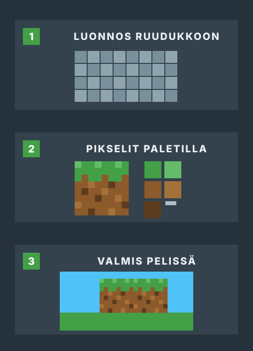
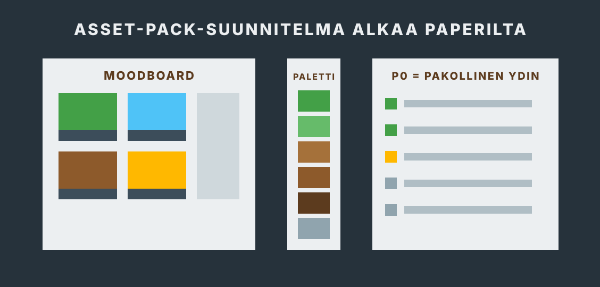
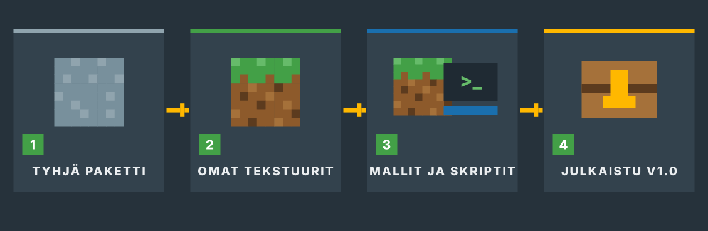
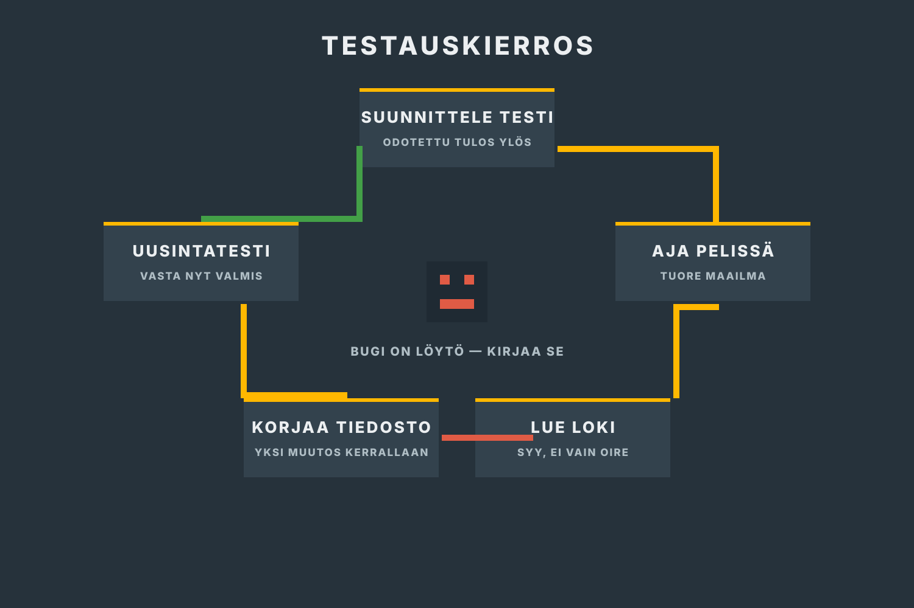
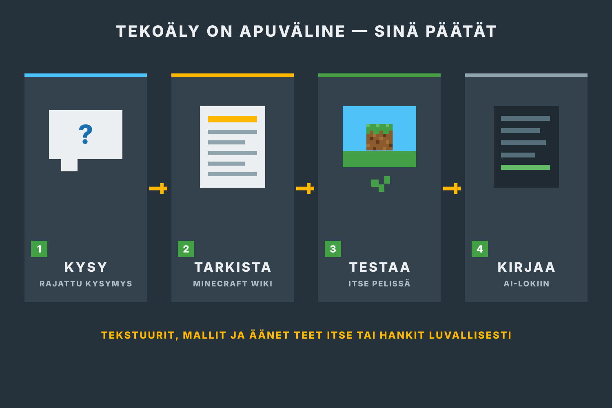

Rakenna paketissa
Tekstuurit, mallit, äänet ja skriptit ovat paketin kansioissa.
Git-repository eli projektin tiedosto- ja versiohistoria sisältää kansiotresourcepack, datapack ja project-docs.Näyttöprojekti · 17.8.–4.12.2026
Teet oman teemapaketin Minecraft Java Editioniin asset kerrallaan ja julkaiset sen avoimella lisenssillä kaikkien ladattavaksi. Asset on pelissä näkyvä tai kuuluva paketin osa: tekstuuri, 3D-malli, ääni tai skriptattu lisä. Järjestys: blokkitekstuurit, esineet ja nimet, Blockbench-mallit, äänet, reseptit ja funktiot. Jokaisen assetin tekniikka arvioidaan näytössä. Projektipäiväkirja kirjoitetaan tälle sivulle.

Lue tämä ennen viikkoa 34
Tässä toteutuksessa et kirjoita samoja asioita erilliseen Word-pohjaan. Sivuston projektipäiväkirja on projektin suunnitelma, työpäiväkirja ja näyttöaineiston hakemisto.
Tekstuurit, mallit, äänet ja skriptit ovat paketin kansioissa.
Git-repository eli projektin tiedosto- ja versiohistoria sisältää kansiotresourcepack, datapack ja project-docs.Tehtävät ovat GitHubin tehtäväkortteja (issueita). Valmis työ näkyy pieninä tallennettuina muutoksina (committeina).
Yksi tehtäväkortti = yleensä puolen tai yhden päivän työ.Jokaisen viikon lopussa vastaat kolmeen kysymykseen: mitä ja miten, miksi sekä missä työnäyte on.
Kentät tallentuvat vain tähän selaimeen.Lataa koko projektipäiväkirja jokaisen viikon lopussa ja korvaa repositoryn vanha tiedosto.
Tiedosto:project-docs/projektipaivakirja.md. Valmis paketti julkaistaan GitHub-releasena viikolla 48.Tee kerran projektin alussa
resourcepack, datapack ja project-docs.project-docs-kansioon ja tee commit.Vie vastaukset säännöllisesti talteen. Selaimen tallennus ei siirry toiselle laitteelle eikä korvaa Gitissä olevaa työnäytettä.
0 / 15 viikkoa kirjattuPaperinen työpaketti on aikataulu ja tarkistuslista tilanteisiin, joissa sivu ei ole auki. Siihen ei tarvitse kirjoittaa samoja vastauksia uudelleen.
Alkuperäinen Word-pohja on tämän pakettipolun lähdeaineisto. Sen aiheet on tuotu sivuston viikkotehtäviin ja projektipäiväkirjaan. Täytä Word-pohja erikseen vain, jos opettaja antaa siitä erillisen palautusohjeen.
Muista: sivuston rastit ja kirjoituskentät ovat oma työmuistisi. Ne tallentuvat vain tähän selaimeen, eivätkä ne siirry opettajalle. Rasti ei ole palautus eikä osa näyttöaineistoa. Rastita vasta, kun työ on testattu ja työnäyte on Git-repositoryssa.
Alkuperäinen toimeksianto · annettu 17.8.2026
Tee oma teemapaketti Minecraft Java Editioniin ja julkaise se avoimena lähdekoodina. Paketti muuttaa pelin ilmettä valitun teeman mukaiseksi: siihen kuuluu omia blokki- ja esinetekstuureja, uusia 3D-malleja ja teeman mukaiset suomenkieliset nimet.
Pakettiin kuuluu myös pelillinen lisä: omia valmistusreseptejä, vähintään yksi saavutus ja komentoskripti, jotka toimivat tavallisessa selviytymismaailmassa ilman modeja. Paketin pitää latautua ilman virheilmoituksia sillä Minecraft-versiolla, joka sovitaan projektin alussa.
Kaiken sisällön pitää olla itse tehtyä tai lisensoitu niin, että sen saa julkaista uudelleen. Paketille valitaan avoin lisenssi, ja repository on julkinen ensimmäisestä commitista asti. Haluan nähdä paketista toimivan väliversion vähintään kerran ennen lopullista versiota, jotta voin pyytää muutoksia.
Valmis paketti julkaistaan niin, että kuka tahansa pelaaja löytää sen, lataa ja asentaa kirjallisen ohjeen avulla — ja niin, että toinen tekijä voi lisenssin puitteissa jatkaa työtä siitä eteenpäin.
Sovittu toteutustapa
Minecraft Java: resurssipaketti + datapaketti
resourcepack-kansioondatapack-kansioonKäytä projektin alussa sovittua Minecraft Java -versiota koko projektin ajan. Version vaihto kesken projektin muuttaa pack_format-arvoja.
Pidä rajaus
Tee ensin toimiva P0-versio. Modit (Forge/Fabric), palvelinpluginit, uudet pelimekaniikat ja maksullinen sisältö eivät kuulu tähän projektiin.
Sovi ohjaajan kanssa
Toimeksianto tulee ohjaajalta — sovi ensimmäinen keskustelu heti viikolla 34. Ohjaaja ja opettaja eivät ole paketin käyttäjiä: he päättävät lisenssistä ja oppilaitoksen linjasta, tarkistavat laadun ja antavat palautetta. Paketin käyttäjä on kuka tahansa lataaja, ja dokumentaatio kirjoitetaan hänelle. Älä keksi vastauksia itse tai tekoälyllä. Merkitse vastaamattomat kohdat avoimiksi.
Mistä tekstuurit ja mallit?

Piirrä itse — se on tämän näytön ydin. Aloita karkealla versiolla ja paranna viimeistelyviikoilla.
Älä jaa paketissasi Mojangin alkuperäisiä tai niistä muokattuja tiedostoja — piirrä omat tekstuurit alusta asti. Muiden tekijöiden materiaalia saa käyttää vain, jos lisenssi sallii uudelleenjulkaisun ja muokkaamisen; kirjaa lähteet ja lisenssit CREDITS-tiedostoon. Tekoälyllä tuotettu grafiikka: P0-ydinsisältö piirretään aina itse; P1/P2-lisäsisällössä tekoäly käy vain, jos opettaja erikseen sallii — kirjaa AI-lokiin.
Pidä punainen lanka näkyvissä
Paketin suunnitteludokumentti
Asset-pack-suunnitelma on tämän projektin suunnitteludokumentti — pelialan GDD:n vastine asset-työlle. Pohja on esitäytetty toimeksiannosta. Sinä teet omat päätökset ja lataat valmiin asset-pack-suunnitelma.md-tiedoston repositoryysi.
Ajoitus: täytä viikolla 35 aloituskeskustelun jälkeen. Omat päätökset vaativat viikon 34 vastaukset ohjaajalta.

Esitäytetty pohja · tulee mukaan tiedostoon
Avoimella lisenssillä julkaistava teemapaketti Minecraft Java Editioniin: resurssipaketti muuttaa pelin ilmettä ja datapaketti lisää reseptit, saavutuksen ja funktiot.
Luonnos → Blockbench tai Piskel → pakettiin → peliin → testi → commit.
Minecraft Java Edition, resurssipaketti + datapaketti, Blockbench ja Piskel, skriptaus mcfunction-komennoilla ja JSONilla, julkaisu GitHub-releasena.
Ei modeja, ei palvelinpluginejä, ei uusia pelimekaniikkoja eikä maksullista sisältöä. Ensin toimiva P0-versio.
Projekti käyntiin
Tämä ei ole erillinen tehtävälista. Samat työvaiheet tehdään viikkokorteissa 34–36. Tee ensin päätökset ja vie yksi oma tekstuuri peliin asti.
Lue toimeksianto. Kirjoita 8 kysymystä ja pidä aloituskeskustelu.
Sovi Minecraft-versio, teema, P0-sisältö ja valmis kun -ehdot.
Asenna Blockbench ja VS Code. Luo tyhjä resurssipaketti, joka näkyy pelin pakettivalikossa. Perusta Git-repository.
Tee sisältölista, moodboard ja paketin kansiorakenne.
Vie yksi oma tekstuuri peliin asti ja committaa se.
Pakettipolku
Avaa vain nykyinen viikko. Lue ensin viikon kärki: mitä pakettiin syntyy ja mitä tekniikkaa opit. Sama tekniikka arvioidaan näytössä. Tee vaiheet järjestyksessä, testaa valmis kun -ehto ja täytä viikon projektipäiväkirja.

Viikot 34–37
Tee oma teemapaketti Minecraft Java Editioniin ja julkaise se avoimena lähdekoodina. Paketti muuttaa pelin ilmettä valitun teeman mukaiseksi: siihen kuuluu omia blokki- ja esinetekstuureja, uusia 3D-malleja ja teeman mukaiset suomenkieliset nimet.
Pakettiin kuuluu myös pelillinen lisä: omia valmistusreseptejä, vähintään yksi saavutus ja komentoskripti, jotka toimivat tavallisessa selviytymismaailmassa ilman modeja. Paketin pitää latautua ilman virheilmoituksia sillä Minecraft-versiolla, joka sovitaan projektin alussa.
Kaiken sisällön pitää olla itse tehtyä tai lisensoitu niin, että sen saa julkaista uudelleen. Paketille valitaan avoin lisenssi, ja repository on julkinen ensimmäisestä commitista asti. Haluan nähdä paketista toimivan väliversion vähintään kerran ennen lopullista versiota, jotta voin pyytää muutoksia.
Valmis paketti julkaistaan niin, että kuka tahansa pelaaja löytää sen, lataa ja asentaa kirjallisen ohjeen avulla — ja niin, että toinen tekijä voi lisenssin puitteissa jatkaa työtä siitä eteenpäin.
Ohjattu työ Näin etenet
Ennen kuin jatkat: toinen henkilö pystyy avaamaan repositoryn ja ymmärtää README:stä, mitä olet tekemässä.
Näytä: toimeksiantokeskustelun muistiinpano, linkit kahteen tutkittuun pakettiin havaintoineen, julkisen repositoryn linkki, ensimmäinen commit ja kuva paketista pelin valikossa.
Ohjattu työ Näin etenet
Ennen kuin jatkat: ohjaaja hyväksyy P0-rajauksen, moodboardin ja ensimmäisen viikon tehtävät.
Näytä: hyväksytty rajaus, päivätty moodboard, asset-pack-suunnitelma.md, LICENSE-tiedosto repositoryn juuressa ja backlog.
Ohjattu työ Näin etenet
Ennen kuin jatkat: kolme omaa blokkitekstuuria näkyy pelissä ilman virheilmoituksia ja muutokset ovat Gitissä.
Näytä: kuvakaappaus blokeista pelissä, tekstuuritiedostojen commit ja kaksi testimerkintää.
Ohjattu työ Näin etenet
Ennen kuin jatkat: esineet näkyvät omilla tekstuureilla ja nimillä sekä tavaraluettelossa että kädessä.
Näytä: kuvakaappaus esineistä ja nimistä, fi_fi.json-commit ja testi rikkinäisellä JSONilla.
Viikot 38–41
Ohjattu työ Näin etenet
Ennen kuin jatkat: oma 3D-malli näkyy pelissä oikein maassa ja kädessä ilman virheilmoituksia.
Näytä: Blockbench-projektitiedosto, kuvakaappaus mallista pelissä ja commit.
Ohjattu työ Näin etenet
Ennen kuin jatkat: valittu kokonaisuus toimii pelissä ja vaihtoehtojen vertailu päätöksineen on kirjattu.
Näytä: vaihtoehtomuistio, kuvakaappaukset pelistä ja toteutuksen commit.
Ohjattu työ Näin etenet
Ennen kuin jatkat: oma ääni kuuluu pelissä komennolla ja sen lähde ja lisenssi on kirjattu CREDITS-tiedostoon.
Näytä: sounds.json-commit, lisenssikirjaus CREDITS-tiedostossa ja testimerkintä.
Ohjattu työ Näin etenet
Ennen kuin jatkat: katselmointilokissa näkyvät osallistujat, palaute, päätös ja hyväksytty seuraava tehtävä.
Näytä: katselmointiloki, esittelyn runko, palaute, päätetty muutos ja toimiva väliversio-zip.
Vko 42 · 12.–16.10.
Ei projektityötä eikä korvaavia tehtäviä. Jatka viikolla 43 viimeisimmästä toimivasta main-versiosta.
Viikot 43–46
Ohjattu työ Näin etenet
Ennen kuin jatkat: main sisältää testatun palautemuutoksen ja datapaketti latautuu /reload-komennolla ilman virheitä.
Näytä: issue, branch/merge tai pull request, funktion commit ja katselmointiloki.
Ohjattu työ Näin etenet
Ennen kuin jatkat: reseptit löytyvät reseptikirjasta, saavutus laukeaa ja palkintofunktio toimii selviytymistilassa.
Näytä: reseptien ja saavutuksen commitit sekä video tai kuvasarja koko polusta selviytymistilassa.
Ohjattu työ Näin etenet
Ennen kuin jatkat: kaikki 12 testiä on ajettu ja kolmesta havainnosta on täydellinen korjausketju.
Näytä: testausloki, tulokset, bugikorjaukset ja uusintatestit.
Ohjattu työ Näin etenet
Ennen kuin jatkat: siivous ei muuttanut testituloksia ja katselmointipalautteeseen on vastattu.
Näytä: katselmointimuistio, siivouscommit sekä LICENSE- ja CREDITS-tiedostot.
Viikot 47–49
Ohjattu työ Näin etenet
Ennen kuin jatkat: julkaisuun on vain rajattu korjauslista eikä uutta sisältöä ole avoinna.
Näytä: RC1-zipit, testipalautteet, päätökset ja viimeinen korjauslista.
Ohjattu työ Näin etenet
Ennen kuin jatkat: henkilö, joka ei tunne projektia, pystyy lataamaan ja asentamaan version 1.0 ohjeen avulla.
Näytä: toimiva release-linkki, v1.0-tagi, asennusohje, ulkopuolisen asennustestin kirjaus ja tunnetut puutteet.
Ohjattu työ Näin etenet
Valmis: paketti, repository, projektipäiväkirja ja näyttöaineisto avautuvat ilman suullista lisäohjetta.
Näytä: julkaistu paketti, repository, project-docs/projektipaivakirja.md, näyttömatriisi, AI-loki ja demo.
Jokainen työskentelykerta
Nyrkkisääntö: jos et pysty selittämään muutosta, työ ei ole vielä valmis.

Laadunvarmistus
Testaus ei ole pelkkää pelaamista. Kirjaa odotettu tulos, havaittu tulos, virheen syy, korjaus ja uusintatesti.
Tekoäly on sallittu apuväline
Saat käyttää tekoälyä ideointiin, selityksiin, JSON- ja komentovirheiden tutkimiseen, testitapausten ehdottamiseen ja tekstin selkeyttämiseen. Tekstuurit, mallit ja äänet teet itse tai hankit luvallisesti — ne ovat tämän näytön ydintä, eikä tekoäly tuota niitä puolestasi ilman opettajan erillistä lupaa ja AI-lokimerkintää. Jokainen pakettiin jäävä ratkaisu on sinun vastuullasi.

Selitä omin sanoin, mitä ratkaisu tekee ja miksi se sopii pakettiisi.
Vertaa Minecraft Wikin dokumentaatioon. Tekoäly voi keksiä vääriä kenttiä ja komentoja.
Aja testit itse pelissä. Älä koskaan keksi testituloksia tai palautetta.
Merkitse merkittävä käyttö, omat muutokset ja se, mitä opit.
Oma AI-loki
Huomaa: selaimeen tallentuva loki on työmuisti, ei sellaisenaan osa näyttöaineistoa. Se tulee mukaan koko projektipäiväkirjan lataukseen. Voit ladata myös pelkän AI-lokin ja tallentaa sen project-docs-kansioon.
Ei merkintöjä vielä.
Näyttöaineisto
Pelkkä valmis paketti ei näytä koko osaamista. Työnäyte on yksi tuotos, joka osoittaa osaamisesi: commit, kuva, testirivi tai muistio. Näyttöaineisto on kaikki työnäytteesi yhdessä. Sama työnäyte voi kelvata useaan kohtaan: esimerkiksi repository ja peliin ladattu paketti todentavat sekä kehitysympäristön että sen käyttöönoton. Kokoa jokaisesta kohdasta linkki, commit, kuva, lokimerkintä tai päätösmuistio.
Opiskelija käyttää kehitysympäristöä
Opiskelija toteuttaa ohjelmiston ohjelmistokomponenttikirjastolla
Viimeinen viikko
Uutta sisältöä ei enää lisätä. Nyt varmistetaan, että osaaminen näkyy.
Paperinen aikataulu
Paperinen paketti auttaa seuraamaan aikataulua ja tarkistamaan näytön vaatimukset. Varsinainen projektipäiväkirja kirjoitetaan tällä sivulla ja viedään repositoryn project-docs-kansioon.
Julkaistut paketit
Valmiit v1.0-paketit nostetaan tänne viikolla 48: paketin nimi, kuvakaappaus, lisenssi ja release-linkki. Galleriaan pääsee, kun julkaisu on testattu toisella koneella pelkän ohjeen avulla.
Ensimmäiset paketit julkaistaan viikolla 48.